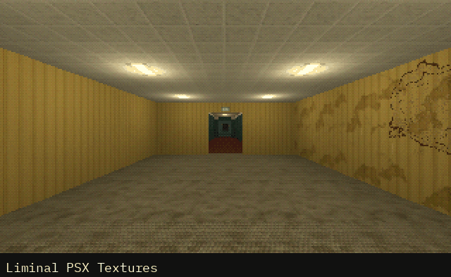

Tutorials › Use Several PSX Asset Packs in One Godot 4 Project
How to Use Several PSX Asset Packs in One Godot 4 Project
Several asset packs in one Godot project, and a script that sets the light limits, filters and navigation cells they ask for.

Asset packs from one maker are made to sit together, but each comes as its own Godot project, and that project's settings are part of how its pack looks. The packs' folders copy into one project, and this script, a SceneTree run once from the command line, sets what they ask of it: the Compatibility renderer's light limits (raised, never lowered), decals and light projectors filtered nearest like every texture of the PS1 look, and navigation cells as small as the monsters' navigation meshes. It saves project.godot, and a second run changes nothing.
Script: cordatix_project_setup.gd (MIT) · Godot 4.3 or newer · its folder on GitHub
How to use it
- Copy each pack's
cordatixfolder onto your project's, the oldest pack first: a file two packs share is the same in both, or newer in the newer pack, so let a file replace the one of the same name. - Put
cordatix_project_setup.gdin your project's folder and, with the project closed in the editor (an open editor can save its own copy of the settings over the script's), run it once from there:godot --headless --path . -s res://cordatix_project_setup.gd. On Windows, give the full path of the Godot executable; its _console.exe shows what the script prints. - Open the project and let Godot import everything. Godot 4.3 can import a model before the textures its material uses when many packs come in at once ("Failed loading resource" in the Output): select that model's .glb and click Reimport in the Import dock.
- For other packs, change
AT_LEAST(settings that only rise) andEXACTLY(settings set as given).
What it needs
- Godot 4.3 or newer, from the command line: the script is a SceneTree run with
-s. - Packs that keep their files in folders of their own, as the Cordatix packs do (
res://cordatix/<pack>/, andres://cordatix/shared/for what they share).
Try it free
The script needs no pack: any Godot 4 project takes it. The free samplers keep the packs' layout, so they go in one project the same way, oldest first; the Cordatix Sampler Box holds every one.
How it was tested
In Godot 4.3 and 4.7.2: on fresh projects it sets every value and keeps the project's own settings, a second run leaves the file as it was, higher light limits stay and a lower one rises. The eight free samplers in one project: their 89 scripts and 225 scenes load and each sampler's demo runs (in Godot 4.3, PSX Bystanders' props and the PSX Horror sampler's Offcut can come in before their textures on the first import: reimported, as the third step says, they wear their materials). The 14 packs of Cordatix PSX Mega Pack in one project: their 196 scripts and 1,483 scenes load and each pack's demo runs.
The code
# Sets what the Cordatix packs' 3D levels ask of the project it runs in, and saves project.godot: the Compatibility
# renderer's light limits, decals and light projectors filtered nearest, the navigation map's cells. Run it once from
# your project's folder, with the project closed in the editor (an open editor can save its own copy over it):
# godot --headless --path . -s res://cordatix_project_setup.gd
# A light limit already higher stays as it is; a second run changes nothing.
extends SceneTree
## How to Use Several PSX Asset Packs in One Godot 4 Project
## Cordatix Godot 4 PSX tutorials, MIT licensed: https://github.com/GoldenSparrow-Dev/cordatix-godot-psx-tutorials
## The devlog: https://cordatix.itch.io/cordatix-psx-mega-pack/devlog/1738246/how-to-use-several-psx-asset-packs-in-one-godot-4-project-cordatix-psx-mega-pack
# at least these: the Compatibility renderer's light limits (an anomaly kit's floor lights a mesh with up to 32 lights)
const AT_LEAST := {
"rendering/limits/opengl/max_renderable_lights": 64,
"rendering/limits/opengl/max_lights_per_object": 32,
}
# exactly these: decals and light projectors filtered nearest, as the PS1 look draws every texture; the navigation
# map's cells as small as the monsters' navigation meshes (0.1 m)
const EXACTLY := {
"rendering/textures/decals/filter": 0,
"rendering/textures/light_projectors/filter": 0,
"navigation/3d/default_cell_size": 0.1,
"navigation/3d/default_cell_height": 0.1,
}
func _init() -> void:
var changed: Array[String] = []
for key in AT_LEAST:
if int(ProjectSettings.get_setting(key, 0)) < AT_LEAST[key]:
ProjectSettings.set_setting(key, AT_LEAST[key])
changed.append(key)
for key in EXACTLY:
if ProjectSettings.get_setting(key) != EXACTLY[key]:
ProjectSettings.set_setting(key, EXACTLY[key])
changed.append(key)
if changed.is_empty():
print("Cordatix: the project settings are already set.")
else:
var err := ProjectSettings.save()
print("Cordatix: set %s; %s." % [", ".join(changed), "saved" if err == OK else "not saved (error %d)" % err])
quit()
The devlog and the pack
The step-by-step walkthrough is the devlog How to Use Several PSX Asset Packs in One Godot 4 Project (Cordatix PSX Mega Pack) on itch.io, written for Cordatix PSX Mega Pack, a PS1-style asset pack by Cordatix for Godot 4, Unity, Unreal and Blender.